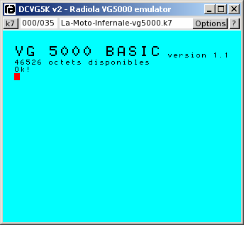
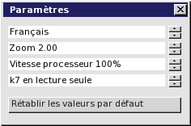
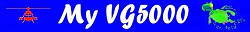

DCVG5K v2 : Emulateur VG5000 Radiola-Philips-Shneider
DCVG5K v2 est un émulateur de VG5000 créé par Daniel Coulom (mail to danielcoulom at gmail point com).
Le site web de DCVG5K est dcvg5k.free.fr.


Photographie © 2005 - Vincent Coulom
Fonctions
DCVG5K v2 émule :
- L'unité centrale VG5000 equipée du microprocesseur Zilog Z80.
- Le système et l'interpréteur Basic intégré.
- L'extension mémoire, les deux manettes de jeu et leur contrôleur
- Le magnétophone pour lire et écrire les cassettes sous forme de fichiers .k7
- L'imprimante (dans un fichier).
L'interface utilisateur est bilingue : anglais et francais.
Informations techniques
DCVG5K v2 est un logiciel libre.

- Il est distribué sous licence GPL (voir la licence officielle)
- Il est programmé en langage C
- Il utilise la bibliothèque SDL pour la video et l'audio.
- Il utilise la bibliothèque SDL_ttf avec la police Vera de Bitstream pour l'affichage des textes.
- Il utilise l'émulateur Z80 et le désassembleur dasmZ80 de Marat Fayzullin, disponibles à Computer Emulation Resources
- L'interface utilisateur a été développée spécialement pour ce projet.
- Il n'utilise pas de fonction spécifique à une machine ou à un système d'exploitation, pour rester portable.
- Il est compatible avec Windows, Linux, Mac-OS et beaucoup d'autres systèmes.
Installation
DCVG5K v2 doit fonctionner sur tous les PC à partir du Pentium II, avec une carte son, une carte video récente, un système Windows ou Linux postérieur à 1998. Il fonctionne aussi sur d'autres machines et d'autres systèmes. La liste sera donnée ici en fonction des témoignages d'utilisateurs.
Testé dans
 A tester dans :
A tester dans :


 etc.
etc.
Tous systèmes
- Créez un nouveau dossier et nommez-le dcvg5k (ou tout autre nom à votre convenance).
- Dans ce dossier chargez l'archive dcvg5kv2.0.zip ou dcvg5kv2.0.tar.gz
- Décompactez l'archive en conservant la structure des répertoires.
- Installez les bibliothèques SDL et SDL_ttf, en version de développement si vous devez compilez le programme. Sinon la version "run-time" suffit.
- La licence de l'émulateur Z80 et du désassembleur dasmz80 ne permettent pas de distribuer les sources. Pour pouvoir compiler, vous devez les télécharger à Computer Emulation Resources et les placer dans le sous-dossier Z80. Dans le fichier Z80.h, mettez en service les instructions #define LSB_FIRST ou #define MSB_FIRST en fonction de l'endianness de votre processeur. Dans dasmz80.c mettez en commentaire toute la fonction main().
- Compilez DCVG5K en fonction de votre système d'exploitation (dans Windows ce n'est pas nécessaire).
- Le sous-dossier /software contient les images de cassettes VG5000 (extension .k7). Vous pouvez le compléter avec vos propres fichiers (voir aussi la collection de dcvg5k).
Windows
Le fichier exécutable dcvg5k.exe est fourni. Il n'est donc pas nécessaire de compiler. Un double clic sur le nom du fichier suffit pour exécuter dcvg5k. Il est aussi possible de créer un raccourci et de le placer sur le bureau ou dans la barre des tâches. Rappel : les bibliothèques SDL et SDL_ttf doivent être installées. Les fichiers SDL.dll et SDL_ttf.dll peuvent être dans le dossier dcvg5k, ou dans tout autre dossier accessible pour leur exécution, par exemple c:/windows/system32.
Linux
Installez les bibliothèques de développement SDL et SDL_ttf, les sources de Z80 et de dasmz80 (voir ci-dessus Tous systèmes), compilez dcvg5k avec le makefile fourni. Pour celà ouvrez un terminal dans le dossier dcvg5k et exécutez la commande make.
Mac-OS
A completer...
Historique
- 2008-02-02 : Diffusion de la version 2.0
Utilisation
Utilisez la fonction adéquate de votre système pour lancer le programme. Dans Windows, par exemple, vous pouvez double-cliquer sur le nom du programme dcvg5k.exe, ou créer un raccourci sur le bureau.
Commandes de l'émulateur
Toutes les commandes de l'émulateur sont effectuées à partir de la barre de menu située en haut de la fenêtre principale.
- A propos de DCVG5K
Cliquez sur le bouton [?] à droite de la barre de menu.
- Paramètres
Cliquez sur le bouton [Options] à droite de la barre de menu, et sélectionnez la ligne Paramètres...
Les boutons à droite de chaque ligne permettent de sélectionner la valeur désirée.
Le boutons [Rétablir les valeurs par défaut] réinitialise toutes les valeurs.

- Configuration du clavier
Cliquez sur le bouton [Options] à droite de la barre de menu, et sélectionnez la ligne Clavier...
Les codes des touches dépendent du type de clavier et du système d'exploitation.
Il est impossible de prévoir toutes les configurations. Par défaut dcvg5k utilise un clavier standard francais dans Windows XP ou Linux. Pour les autres configurations il faut redéfinir la disposition. Le principe est simple : à chaque touche physique du VG5000 correspond une touche physique de la machine utilisée. Mode opératoire : tapez une touche sur votre clavier. La touche correspondante du VG5000 est affichée. Si elle n'est pas correcte, cliquez sur l'image de la touche VG5000 souhaitée. Répétez l'opération pour toutes les touches du VG5000. Ensuite vous pouvez sauver votre disposition personnalisée, elle sera ainsi utilisée au prochain lancement de DCVG5K.
- Configuration des manettes
Cliquez sur le bouton [Options] à droite de la barre de menu, et sélectionnez la ligne Manettes...
Les manettes sont émulées par le clavier (utilisez de préférence le pavé numérique). Pour chacune des deux manettes il faut définir quatre touches de direction et une touche d'action. Le principe est exactement le même que pour le clavier. Notez que la même touche peut être utilisée à la fois pour émuler les manettes et le clavier. A vous de faire les choix judicieux pour ne pas perturber le fonctionnement du programme exécuté lors de l'utilisation des manettes.
- Chargement de cassette
Cliquez sur le bouton [k7] de la barre de menu...
La liste des images de cassettes (fichiers .k7 dans le sous/dossier software) est affichée dans un menu, sur lequel vous pouvez cliquer pour charger une cassette. Vous pouvez aussi cliquer sur la ligne [décharger] pour enlever la cassette présente dans le lecteur, et sur [suite...] ou [retour au début...] si ces lignes sont affichées. Pour avoir une cassette ou une disquette vierge, créez un fichier vide dans le sous-dossier software et donnez-lui l'extension .k7
Commandes du VG5000
Consultez le Manuel d'utilisation du VG5000

Commandes des logiciels
Téléchargez la documentation spécifique, à la page Logiciels VG5000 du site dcvg5k.
Liens
- La page des fans du VG5000
- My VG5000 by Carl 
{kind=link}